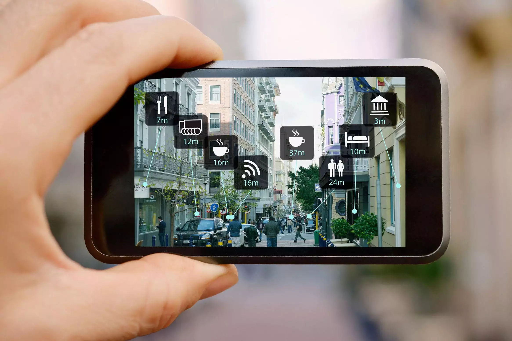
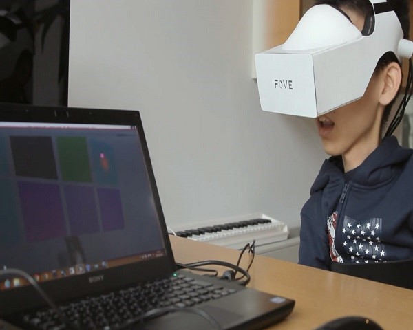

Découvrez Des Articles Connexes
Applications de la réalité mixte
La réalité mixte existe depuis des années, mais ce n'est qu'au cours des 10 dernières années qu'elle est remontée à la surface grâce au développement avancé de smartphones avec Android et iOS, équipés de gyroscopes, de GPS et de caméras qui s'améliorent de plus en plus avec les années. venir. Ce développement a conduit à la réalisation de véritables capacités pour la réalité mixte. Ce dernier combine la réalité virtuelle et le monde réel sous forme de vidéos graphiquement améliorées. Et peut être expérimenté soit avec des casques que les gens portent, soit simplement avec des appareils mobiles que nous avons avec nous tous les jours.  Les militaires utilisent la réalité augmentée pour aider les hommes et les femmes à effectuer des réparations sur le terrain. Le personnel médical utilise la RA pour se préparer aux chirurgies. Les applications commerciales et éducatives possibles sont illimitées. Surtout lors de la dernière pandémie où la distance représentait un énorme obstacle pour l'éducation. MR a encore de la place pour prouver que cela peut être LA solution dans de telles circonstances.
Comment la réalité mixte peut aider les personnes handicapées
- Éducation Dans une de ces études, les chercheurs ont utilisé des programmes de formation en réalité virtuelle pour enseigner aux enfants autistes comment traverser les routes en toute sécurité. Après un exercice d'un mois, les chercheurs ont établi que la formation en réalité virtuelle améliorait considérablement la capacité des enfants à traverser la route.
- Itinéraire En visitant de nouveaux endroits, il est souvent difficile pour les personnes handicapées physiques de planifier des itinéraires à emprunter autour d'une ville. La réalité virtuelle peut aider à fournir un environnement simulé de la ville et ainsi permettre à la personne handicapée d'avoir une idée de la ville et de s'habituer aux itinéraires les plus accessibles à emprunter.
- Récupération Musculaire La réalité virtuelle est également utile pour aider les personnes qui ont souffert d'accidents vasculaires cérébraux ou de blessures liées au sport et même de problèmes du système vestibulaire à améliorer leurs capacités motrices et à aider à la récupération musculaire. Selon les recherches, même le fait d'imaginer que l'on est en train d'effectuer une activité suffit à stimuler les parties pertinentes du cerveau nécessaires à cette activité.
- Malvoyant Certaines conditions telles que la maladie de Stargardt peuvent entraîner une déficience visuelle sous la forme d'une vision centrale détaillée réduite. Cependant, la recherche a établi qu'il est possible d'utiliser la RV pour aider les personnes ayant de telles déficiences visuelles à voir les images avec plus de clarté.
Les opportunités pour les utilisateurs handicapés ne peuvent que croître
La raison pour laquelle la RA et la RV sont si appréciées des joueurs et d'autres industries est qu'elles rendent l'impossible possible. Pour certains, ce ne sont que des jeux qui offrent une nouvelle opportunité dans un monde fantastique; pour d'autres, ce sont des outils de résolution de problèmes dans l'architecture, la sécurité et d'autres secteurs. Quoi qu'il en soit, cette nouvelle réalité permet aux utilisateurs de repousser les limites. Cela signifie que la réalité virtuelle pour la désactivation est un pas en avant massif pour permettre aux personnes incapables de repousser leurs limites. Ils peuvent voir le monde sous un nouveau jour. Cela peut être social, récréatif, éducatif ou professionnel. 